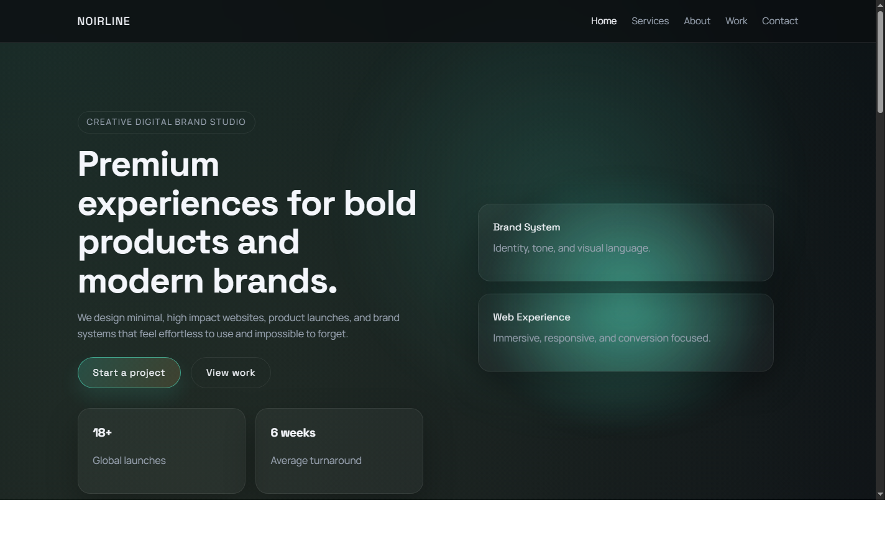
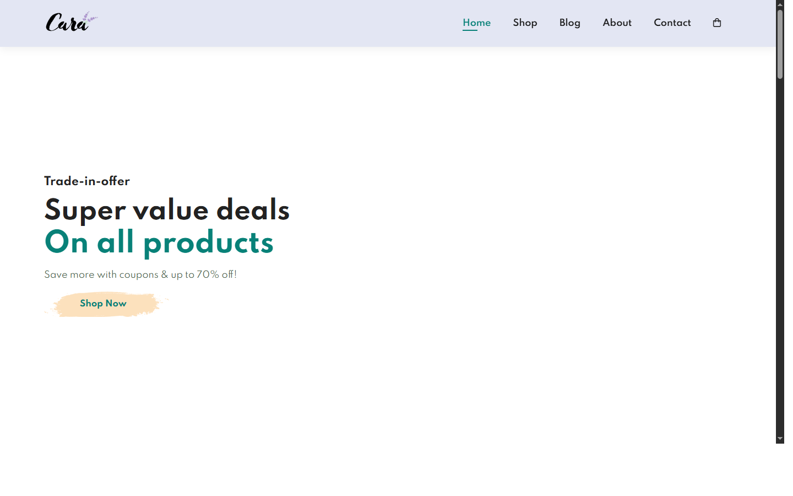
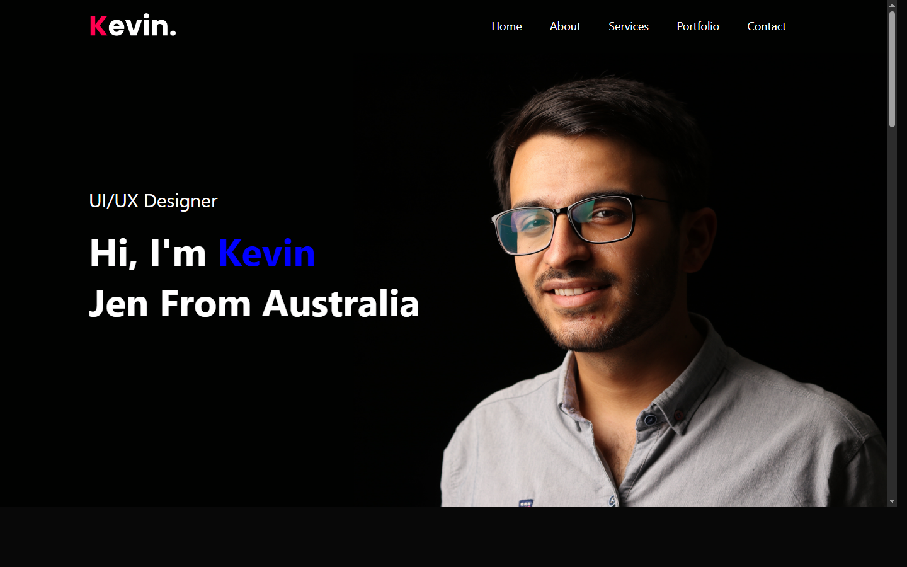
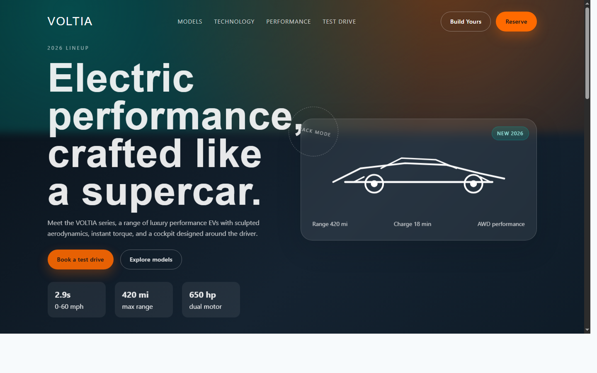

Noirline
A sleek landing-page concept centered on clear sections and smooth responsive behavior.
HTML5CSS3JavaScript
Live project previews with direct code and demo links.

A sleek landing-page concept centered on clear sections and smooth responsive behavior.

A clone project used to improve layout precision, typography hierarchy, and section pacing.

A portfolio-clone build focused on reusable structure, spacing rhythm, and responsive fidelity.

A car showcase webpage with clear content blocks and a simple, easy-to-browse presentation.